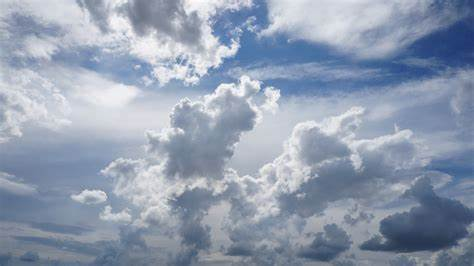
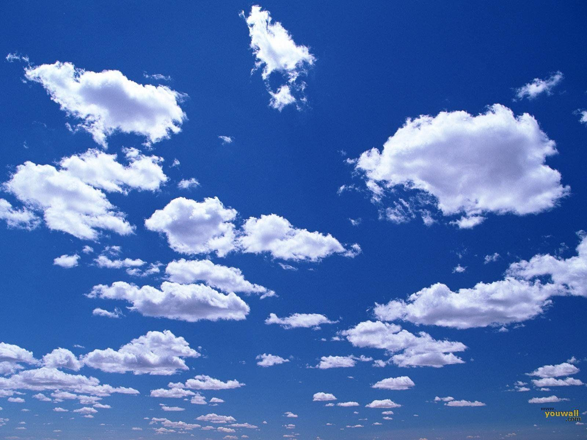

Bulan
Bulan adalah satelit alami Bumi satu-satunya dan merupakan satelit terbesar kelima dalam Tata Surya.
Read moreHello there! My name is Christin Rachell Jocom and I am currently a fourth semester student at Sam Ratulangi University majoring in Informatics Engineering. I am a friendly and outgoing individual who loves to explore the world of technology. Being passionate about learning new things, I am always eager to expand my knowledge and skills in the field of IT.
Berikut ini adalah kumpulan gambar langit biru ~
 

Bulan adalah satelit alami Bumi satu-satunya dan merupakan satelit terbesar kelima dalam Tata Surya.
Read morePlanet adalah benda astronomi yang mengorbit sebuah bintang.
Read moreMatahari adalah bintang di pusat Tata Surya.
Read moreEmail: christin.jocom.01@gmail.com
Phone: 08123456789